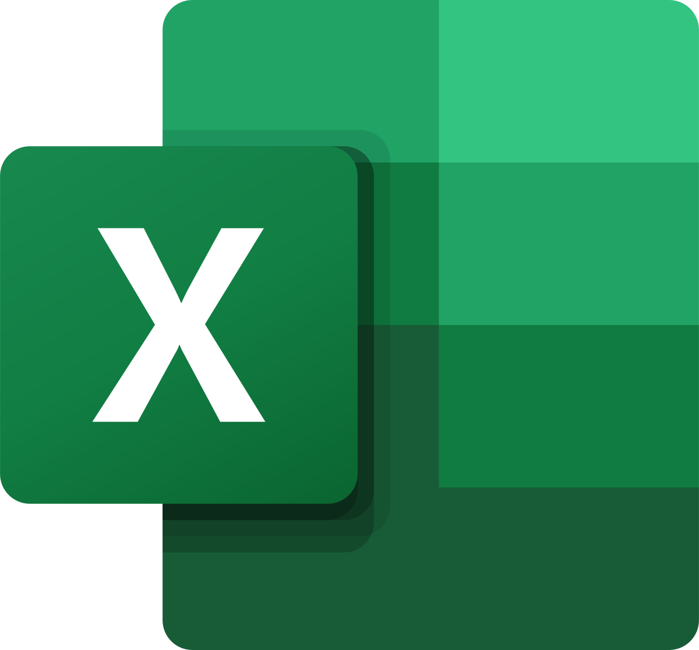
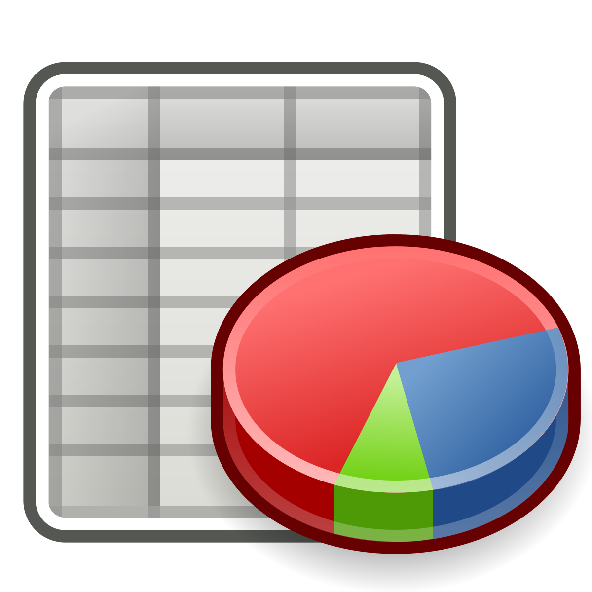

kgarcia.scl
Procesadores
Presentaciones
Hojas de calculo
Componentes PC
Hoja de calculo y su utilidad
Se entiende por hoja de cálculo o plantilla electrónica a un tipo de herramienta digital que consiste en un documento compuesto por filas y columnas en una tabla, formando así celdas en las que puede ingresarse información alfanumérica y ponerla en relación de manera lógica, matemática o secuencial. Las hojas de cálculo son una herramienta informática de enorme aplicación y vigencia en los más diversos campos de la actividad humana en el mundo de hoy. Desde administradores, contadores, científicos y jefes de inventario, hasta las profesiones menos dadas a la matemática sacan provecho de ella y de su capacidad de automatización de ciertas operaciones, como el ordenamiento de datos o combinaciones de las cuatro principales de la matemática: suma, resta, multiplicación y división.
La primera hoja electrónica de datos se creó en 1972, aprovechando algoritmos ya patentados un par de años antes por Pardo y Landau. Su anuncio tuvo lugar en el artículo Budgeting Models and System Simulation de Richard Mattessich, aunque el inventor aceptado de las hojas de cálculo como las conocemos es Dan Bricklin.Según Bricklin, la idea surgió a partir de una extensa tabla dibujada en un pizarrón por un profesor de su universidad, quien percibiendo un cálculo errado casi al finalizar, tuvo que volver a plantearla desde el principio, borrando todo su arduo trabajo. Al ver aquello, Bricklin se imaginó la posibilidad de una hoja de cálculo interactiva en la que dichas labores fueran mucho más sencillas.
|  |  |
 |
|---|---|---|
Microsoft Excel |
Google Sheets |
Microsoft PowerPoint |
Es una hoja de cálculo desarrollada por Microsoft para Windows, macOS, Android, iOS y iPadOS. Cuenta con capacidades de cálculo o computación, herramientas gráficas, tablas dinámicas y un lenguaje de programación de macros llamado Visual Basic para aplicaciones. Excel forma parte del paquete de software Microsoft 365. |
Es un programa de hoja de cálculo que se incluye como parte del conjunto gratuito de editores de Google Docs basado en la web que ofrece Google. Google Sheets está disponible como aplicación web, aplicación móvil para: Android, iOS, Microsoft Windows, BlackBerry OS y como aplicación de escritorio en ChromeOS de Google. |
Es un programa de hoja de cálculo que forma parte del Proyecto de escritorio de software libre GNOME. La versión 1.0 de Gnumeric se lanzó el 31 de diciembre de 2001. Gnumeric se distribuye como software libre bajo la Licencia Pública General GNU; está destinado a reemplazar los programas propietarios de hojas de cálculo como Microsoft Excel. |